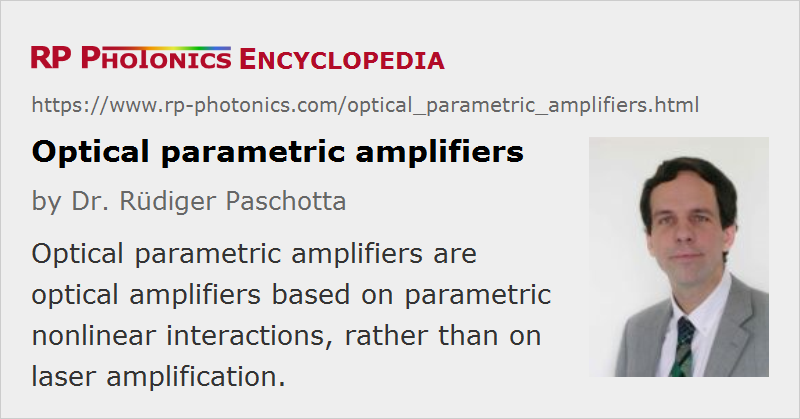

Optical Parametric Amplifiers
Acronym: OPA
Definition: optical amplifiers based on parametric nonlinear interactions
German: optische parametrische Verstärker
Categories: nonlinear optics, photonic devices, non-laser light sources
How to cite the article; suggest additional literature
Author: Dr. Rüdiger Paschotta
Crystal materials lacking inversion symmetry can exhibit a so-called χ(2) nonlinearity. Apart from frequency doubling and sum and difference frequency generation, this allows for parametric amplification. Here, the signal beam propagates through the crystal together with a pump beam of shorter wavelength. Photons of the pump wave are then converted into (lower-energy) signal photons and the same number of so-called idler photons; the photon energy of the idler wave is the difference between the photon energies of pump and signal wave. As the pump energy is fully converted into energy of signal and idler beams, the crystal material is not heated in this process.
In the usual non-degenerate case, signal and idler waves constitute physically separate beams. However, there are degenerate parametric amplifiers where signal and idler wave are identical, i.e. have the same frequency and same polarization. The signal frequency then has to be exactly half the pump frequency, and the phase relationship between signal and pump determines the direction of energy flow, i.e., whether there is amplification or deamplification of the signal. This phase-sensitive amplification does not occur in a non-degenerate amplifier; here, a signal with arbitrary phase can be amplified, and the phase of the generated idler will automatically adjust accordingly. (More details are given in the article on parametric amplification.)
Phase Matching
Parametric processes are sensitive to the optical phases of the waves involved. Efficient conversion usually requires phase matching to be arranged for the wavelength range of interest. The gain bandwidth is largely determined by the phase-matching bandwidth, which depends on the chromatic dispersion properties and can in certain situations be extremely large.
Parametric amplifiers are particularly attractive for the generation of wavelengths which are very hard to access directly with lasers and laser amplifiers due to the lack of suitable gain media, or when properties such as a large tuning range or a high gain in a short length are required. Tuning in a very wide wavelength range is often achieved simply by rotating the critically phase-matched nonlinear crystal.
Pulsed Operation
In most cases, parametric amplifiers are used for pulses, which may be nanosecond pulses from Q-switched lasers or ultrashort pulses from mode-locked lasers. With the high pump intensities achievable with pulses, the parametric gain can be very high – sometimes more than 80 dB within a few millimeters of crystal material. This high gain, together with the potential to operate at very different wavelengths and the minimal heating (only due to parasitic absorption, which is usually very weak), makes parametric amplifiers very attractive for a range of applications, including optical parametric chirped-pulse amplification of femtosecond pulses. Due to the high gain, the effect of gain guiding must be considered in numerical models. Purely analytical models usually neglect this effect.
High-power Operation
Generally, parametric amplifiers are suitable for fairly high output powers, but there are some partly non-trivial issues to observe.
A very beneficial property of optical parametric amplifiers is that fundamentally there is not dissipative process in the nonlinear crystal, so that thermal effects could in principle be entirely absent. However, there are some parasitic absorption losses, the strength of which depends very much on the crystal material. Unfortunately, even a moderate amount of local heating can be detrimental as it disturbs the phase matching. Therefore, significant thermal effects can in practice seriously limit the output power capability of a parametric amplifier. This holds for, e.g., amplifiers based on KTP and KTA, whereas LBO shows only weak absorption.
Another issue, which is less well known, is gain guiding. In an amplifier with high gain, the effect of gain guiding can strongly influence the output profile of the amplified wave. This creates a problem for devices with large mode areas [9]: the signal beam becomes smaller and smaller, even if the input signal beam is large. In the last section of the amplifier, where significant power is transferred from the pump beam to the signal beam, the signal beam is then too small to utilize the pump energy fully. This problem does not occur for devices with small mode area, as diffraction counteracts the effect of gain guiding, but high-power devices require larger mode areas.
The conclusion is that gain guiding spoils the apparent power scalability of OPAs [9], even in the absence of parasitic losses: with the apparent power scaling procedure of increasing the mode area in proportion to the power level, one would run into the explained problem with gain guiding, so that one would have to sacrifice the output beam quality and/or the conversion efficiency. Interestingly, the compromise between these performance figures can be improved by using a material with lower nonlinearity, operating with correspondingly smaller mode area.
Long Output Wavelengths
Optical parametric amplifiers are often used to amplify light with relatively long wavelengths. The accessible wavelength range is usually limited by the transparency range of the used nonlinear crystals.
One requires special optical elements working at the relatively long wavelengths; see the article on infrared optics.
Comparison with Laser Amplifiers
The following list summarizes the most important differences of parametric amplifiers as compared with laser amplifiers:
- Parametric amplifiers are not limited to narrow wavelength ranges as defined by laser transitions of laser gain media.
- The gain bandwidth is determined by the dispersive properties and the length of the amplifier crystal, rather than by details of a laser transition.
- With pulsed pumping, the gain per unit length can be much higher than for laser gain.
- A parametric amplifier has no energy storage, i.e., it amplifies only while being pumped. This allows for, e.g., very high intensity contrast between an amplified pulse and any satellite pulses.
- The absence of heat generation (at least provided that parasitic absorption losses are small) makes OPAs suitable for high-power operation.
- In the (rarely used) case of degenerate parametric amplification, the amplification is phase-sensitive, and quantum excess noise can be avoided.
Fiber-optic Parametric Amplifiers
There are also fiber-optic parametric amplifiers, which are based on the χ(3) nonlinearity of a fiber, rather than the χ(2) nonlinearity of a crystal, and often contain a fiber loop. In that case, there can be up to four waves interacting with each other (→ four-wave mixing). In many cases, there is a degeneracy where two photons from a single pump wave are converted into a pair of a signal and idler photon, with signal and idler frequencies to both sides of the pump frequency. However, it is also possible to use a non-degenerate interaction with two separate pump waves. In any case, the gain bandwidth is determined by dispersive properties of the fiber medium, but there can also be a significant influence of the Kerr nonlinearity of the fiber.
Suppliers
The RP Photonics Buyer's Guide contains 16 suppliers for optical parametric amplifiers. Among them:
Questions and Comments from Users
Here you can submit questions and comments. As far as they get accepted by the author, they will appear above this paragraph together with the author’s answer. The author will decide on acceptance based on certain criteria. Essentially, the issue must be of sufficiently broad interest.
Please do not enter personal data here; we would otherwise delete it soon. (See also our privacy declaration.) If you wish to receive personal feedback or consultancy from the author, please contact him e.g. via e-mail.
By submitting the information, you give your consent to the potential publication of your inputs on our website according to our rules. (If you later retract your consent, we will delete those inputs.) As your inputs are first reviewed by the author, they may be published with some delay.
Bibliography
| [1] | S. A. Akhmanov et al., “Observation of parametric amplification in the optical range”, JETP Lett. 2, 191 (1965) |
| [2] | J. A. Giordmaine and R. C. Miller, “Tunable coherent parametric oscillation in LiNbO3 at optical frequencies”, Phys. Rev. Lett. 14 (24), 973 (1965), doi:10.1103/PhysRevLett.14.973 (first experimental demonstration of an optical parametric oscillator) |
| [3] | R. A. Baumgartner and R. L. Byer, “Optical parametric amplification”, IEEE J. Quantum Electron. 15 (6), 432 (1979), doi:10.1109/JQE.1979.1070043 |
| [4] | R. L. Byer and A. Piskarskas (eds.), Feature issue on optical parametric oscillation and amplification, JOSA B 9, 1656–1791 (1993) and 10, 2148–2243 (1993) |
| [5] | A. Galvanauskas et al., “High-energy femtosecond pulse amplification in a quasi-phase-matched parametric amplifier”, Opt. Lett. 23 (3), 210 (1998), doi:10.1364/OL.23.000210 |
| [6] | G. Cerullo et al., “Sub-8-fs pulses from an ultrabroadband optical parametric amplifier in the visible”, Opt. Lett. 23 (16), 1283 (1998), doi:10.1364/OL.23.001283 |
| [7] | A. Shirakawa et al., “Sub-5-fs visible pulse generation by pulse-front-matched noncollinear optical parametric amplification”, Appl. Phys. Lett. 74 (16), 2268 (1999), doi:10.1063/1.123820 |
| [8] | G. Cerullo et al., “Ultrafast optical parametric amplifiers”, Rev. Sci. Instrum. 74, 1 (2003), doi:10.1063/1.1523642 |
| [9] | G. Arisholm et al., “Limits to the power scalability of high-gain optical parametric oscillators and amplifiers”, J. Opt. Soc. Am. B 21 (3), 578 (2004), doi:10.1364/JOSAB.21.000578 |
| [10] | T. Fuji et al., “Parametric amplification of few-cycle carrier–envelope phase-stable pulses at 2.1 μm”, Opt. Lett. 31 (8), 1103 (2006), doi:10.1364/OL.31.001103 |
| [11] | C. Vozzi et al., “High-energy, few-optical-cycle pulses at 1.5 μm with passive carrier–envelope phase stabilization”, Opt. Express 14 (21), 10109 (2006), doi:10.1364/OE.14.010109 |
| [12] | D. N. Schimpf et al., “Theoretical analysis of the gain bandwidth for noncollinear parametric amplification of ultrafast pulses”, J. Opt. Soc. Am. B 24 (11), 2837 (2007), doi:10.1364/JOSAB.24.002837 |
| [13] | D. Brida et al., “Generation of broadband mid-infrared pulses from an optical parametric amplifier”, Opt. Express 15 (23), 15035 (2007), doi:10.1364/OE.15.015035 |
| [14] | M. Charbonneau-Lefort et al., “Optical parametric amplifiers using chirped quasi-phase-matching gratings I: practical design formulas”, J. Opt. Soc. Am. B 25 (4), 463 (2008), doi:10.1364/JOSAB.25.000463 |
| [15] | T. Steinle et al., “Watt-level optical parametric amplifier at 42 MHz tunable from 1.35 to 4.5 μm coherently seeded with solitons”, Opt. Express 22 (8), 9567 (2014), doi:10.1364/OE.22.009567 |
| [16] | M. Liebel et al., “Sub-10-fs pulses tunable from 480 to 980 nm from a NOPA pumped by an Yb:KGW source”, Opt. Lett. 39 (14), 4112 (2014), doi:10.1364/OL.39.004112 |
| [17] | B. E. Schmidt et al., “Frequency domain optical parametric amplification”, Nature Communications 5, 3643 (2014), doi:10.1038/ncomms4643 |
| [18] | P. A. Andrekson and M. Karlsson, “Fiber-based phase-sensitive optical amplifiers and their applications”, Advances in Optics and Photonics 12 (2), 367 (2020), doi:10.1364/AOP.382548 |
| [19] | G. Cerullo and C. Manzoni, “Solid-state ultrafast optical parametric amplifiers”, in Solid-State Lasers and Applications (ed. A. Sennaroglu), CRC Press, Boca Raton (2007), Chapter 11, pp. 437–472 |
See also: parametric nonlinearities, parametric amplification, optical parametric chirped-pulse amplification, nonlinear crystal materials, optical amplifiers, parametric fluorescence, amplifier noise, quantum noise
and other articles in the categories nonlinear optics, photonic devices, non-laser light sources

This encyclopedia is authored by Dr. Rüdiger Paschotta, the founder and executive of RP Photonics Consulting GmbH. How about a tailored training course from this distinguished expert at your location? Contact RP Photonics to find out how his technical consulting services (e.g. product designs, problem solving, independent evaluations, training) and software could become very valuable for your business!
|  |
If you like this page, please share the link with your friends and colleagues, e.g. via social media:
These sharing buttons are implemented in a privacy-friendly way!